7.1 Overview
Layer 6, the LLM Gateway, is the single point through which every model call passes. Layer 7, the Model Layer, is the set of models behind it: proprietary APIs (GPT, Claude, Gemini, Cohere, Azure OpenAI, Bedrock) and open-source models (Llama, Mistral, Mixtral, Qwen, Phi) served in-house.
Enterprises need a gateway because agents multiply model calls by one to two orders of magnitude compared with chat, providers fail and change, costs must be attributed to tenants and teams, prompts and completions must be audited, and no single model is best for every task. Without a gateway, all of that logic ends up duplicated in agent code and drifts.
The diagram lists the gateway's responsibilities: model routing, load balancing, failover and fallback, rate limiting and quotas, caching (prompt and response), cost optimisation, model versioning, policy enforcement and audit logging.
7.2 Architecture

Mermaid source diagrams/llm-gateway.mmd
flowchart LR
A[Agents & Guardrails] --> GW
subgraph GW["6. LLM Gateway"]
direction TB
AUTH[Virtual keys & quotas] --> CACHE{Cache hit?}
CACHE -->|yes| RESP[Return cached]
CACHE -->|no| ROUTER[Router<br/>task class · cost · latency]
ROUTER --> LB[Load balancer]
LB --> FO[Failover & retries]
FO --> LOG[Audit log · token metering]
end
FO --> P1[OpenAI]
FO --> P2[Anthropic]
FO --> P3[Google Gemini]
FO --> P4[Azure OpenAI / Bedrock]
FO --> P5[Self-hosted vLLM<br/>Llama · Mistral · Qwen]
LOG --> OBS[Observability]
7.2.1 Model routing
Requests carry a task class (reasoning, generation, simple, agent:coder, embedding, safety) rather than a model name. The gateway maps task class to an ordered list of models from a catalogue:
- Simple tasks (classification, extraction, summarising a tool result, guardrail judges) → small, cheap, fast model, often self-hosted.
- Complex reasoning (planning, review, analysis) → frontier reasoning model.
- Code → the best code model.
- Long documents → model with the largest context.
Routing can be refined dynamically: downgrade short prompts without tools, upgrade after a failed structured-output parse, route to a region for data residency, or route to a fine-tuned model for a tenant. Keep routing rules declarative and versioned.
7.2.2 Load balancing
Distribute traffic across multiple deployments of the same model (several Azure regions, several API keys with separate rate limits, several vLLM replicas) with weighted round-robin, least-latency or least-outstanding-requests strategies. Load balancing across different models of the same class is acceptable only if evaluation shows equivalent quality.
7.2.3 Failover and fallback
On 429/5xx/timeout, mark the deployment unhealthy for a cooldown and try the next candidate. Fallback across providers (Claude → GPT → Gemini) requires prompts that are not provider-specific and a normalised response shape; the reference gateway (code-examples/llm_gateway.py) adapts OpenAI-compatible and Anthropic message formats and returns one GatewayResponse.
7.2.4 Rate limiting and quotas
Per-tenant, per-team and per-application budgets in tokens or currency per period, enforced before the call; per-deployment concurrency limits to stay under provider rate limits; queueing with priority (interactive runs over batch).
7.2.5 Caching
- Exact response cache: hash of model + messages + tools + parameters → response, for deterministic calls (temperature 0). Hit rates are high for guardrail judges, classification and repeated retrieval summaries.
- Semantic cache: embed the prompt, return a cached response if a near-identical prompt exists. Risky for agent steps (context differs subtly); use for FAQ-style traffic only.
- Provider prompt caching: Anthropic and OpenAI cache long stable prefixes (system prompt, tool schemas, documents) and bill cached tokens at a fraction of the price. Structure prompts so stable content comes first and mark cache breakpoints.
7.2.6 Cost optimisation
Token optimisation (compact tool schemas, summarised observations, trimmed context), model selection by task class, prompt caching, batch APIs for offline work (50 % discount at major providers), and self-hosting for high-volume simple tasks. Report cost per run, per tenant and per agent; alert on anomalies.
7.2.7 Model versioning
Pin models to dated versions (gpt-4.1-2025-04-14, claude-sonnet-4-5-20250929) in the catalogue; alias them by task class; promote new versions through evaluation (offline eval suite, then shadow traffic, then canary) and record status: active | deprecated | retired with dates. Never point production at a floating "latest".
7.2.8 Policy enforcement and audit logging
The gateway is where organisation-wide model policy is enforced: approved providers per data classification (confidential data only to in-VPC models), regions, maximum context, forbidden features. It logs every request and response (or hashes, depending on classification), tokens, cost, latency, model version, tenant and trace ID.
7.3 Layer 7: Model Layer
7.3.1 Proprietary models
| Provider | Family | Typical role | Access |
|---|---|---|---|
| OpenAI | GPT-4.1 family, o-series reasoning models | Planning, generation, tool use, reasoning | Direct API, Azure OpenAI |
| Anthropic | Claude Sonnet / Opus / Haiku | Reasoning, coding, long context, agentic tool use | Direct API, Bedrock, Vertex AI |
| Gemini Pro / Flash | Very long context, multimodal, cost-efficient tiers | Vertex AI, AI Studio | |
| Cohere | Command R / R+, Embed, Rerank | RAG-optimised generation, embeddings, re-ranking | API, private deployment |
| Mistral (hosted) | Mistral Large, Codestral | European hosting, code | API, Azure, self-host open weights |
7.3.2 Open-source models
| Family | Sizes | Strengths |
|---|---|---|
| Llama 3.x (Meta) | 8B–405B | Strong general models, large ecosystem, permissive licence with conditions |
| Mistral / Mixtral | 7B, 8×7B, 8×22B, Small/Medium open weights | Efficient MoE, good tool use, Apache 2.0 for several |
| Qwen 2.5 / 3 (Alibaba) | 0.5B–235B, Coder variants | Excellent code and multilingual, strong small models |
| Phi-3 / Phi-4 (Microsoft) | 3.8B–14B | Small models with high reasoning per parameter |
| DeepSeek V3 / R1 | Large MoE | Strong reasoning and code at low cost |
| Gemma (Google) | 2B–27B | Efficient small models |
7.3.3 Model selection criteria
Quality on your own evaluation set (not public leaderboards), tool-calling reliability (structured output, parallel calls), context length, latency and throughput, cost per task, data-residency and licensing constraints, multimodality, and vendor stability. Run every candidate through the same evaluation suite (see Observability) before it enters the catalogue.
7.3.4 Fine-tuning, LoRA and QLoRA
Fine-tune when prompting and retrieval cannot reach the target: consistent house style, domain jargon, a specialised classifier, a small model replacing a large one for a narrow task. Full fine-tuning updates all weights (expensive); LoRA trains low-rank adapters on attention matrices (a few per cent of parameters, mergeable, swappable per tenant); QLoRA quantises the base model to 4-bit during training so a 70B model fits on a single 48–80 GB GPU. Tooling: Hugging Face PEFT/TRL, Axolotl, Unsloth, provider fine-tuning APIs for proprietary models. Fine-tuned models are versioned, evaluated and rolled out exactly like base models. Do not fine-tune to add knowledge; use RAG.
7.3.5 Self-hosting
Reasons: data residency, cost at high volume, latency control, custom or fine-tuned models, offline environments. Costs: GPUs, MLOps, security patching, capacity planning.
| Technology | Highlights |
|---|---|
| vLLM | PagedAttention, continuous batching, OpenAI-compatible API, tensor parallel, LoRA adapters, quantisation (AWQ, GPTQ, FP8); the default choice |
| TensorRT-LLM | NVIDIA-optimised kernels, in-flight batching, best raw throughput on NVIDIA GPUs; more build effort |
| NVIDIA Triton Inference Server | Multi-framework serving, model ensembles, metrics; hosts TensorRT-LLM backends |
| Text Generation Inference (Hugging Face) | Production server with quantisation and streaming |
| SGLang | Fast structured generation, RadixAttention prefix caching |
| Ollama / llama.cpp | Local and edge inference; development and small deployments |
Deploy on a GPU node pool in Kubernetes (NVIDIA device plugin, node affinity), expose through the gateway as an OpenAI-compatible provider, autoscale on queue depth or GPU utilisation (KEDA), and keep a warm replica to avoid cold-start weight loading.
7.4 LLMOps architecture
LLMOps applies MLOps discipline to prompts, models and evaluation.
- Model deployment. Catalogue with versions and lifecycle status; self-hosted models packaged as container images with pinned weights; promotion via evaluation gates.
- Model monitoring. Latency, error rates, token distributions, output drift (embedding-based), safety flag rates, cost per task class; alert on provider degradation.
- Prompt management. Prompts are code: stored in a registry with versions, reviewed in pull requests, tested against evaluation sets, referenced by version in agent configuration, rolled out with canaries.
- Evaluation pipelines. Offline suites run in CI on every prompt/model change; online evaluation on sampled production traffic; regression gates block promotion.
- Model lifecycle. Candidate → evaluated → canary → active → deprecated (with a sunset date and migration plan) → retired. Provider deprecations force this cadence anyway.
7.5 Implementation guide
| Technology | Type | Strengths | Considerations |
|---|---|---|---|
| LiteLLM (proxy) | Open-source gateway | 100+ providers, virtual keys, budgets, routing strategies, fallbacks, Redis cache, OTel/LangSmith callbacks | Python service to operate; config sprawl |
| OpenRouter | Hosted multi-provider API | Immediate access to many models, one bill | Data passes through third party; not for confidential data |
| Azure API Management / AI Gateway | Cloud gateway | Enterprise policy, token rate limits, private networking to Azure OpenAI | Azure-centric |
| Kong AI Gateway, Portkey, Cloudflare AI Gateway | Gateway products | Plugins for caching, guardrails, semantic routing, analytics | Licensing, vendor fit |
| Custom gateway | Your own service | Exact fit for routing and policy, minimal dependencies | Build and maintain provider adapters |
Recommendation: LiteLLM proxy for most teams, behind an API gateway for authentication, with the routing catalogue and budgets in versioned configuration. Build a custom gateway only when policy requirements exceed what the proxy exposes.
7.6 Example implementation
Routing catalogue entry and call (from code-examples/llm_gateway.py):
CATALOG["reasoning"] = [
ModelSpec("reasoning-a", "anthropic", "claude-sonnet-4-5-20250929", 3.0, 15.0, 200_000, supports_prompt_cache=True),
ModelSpec("reasoning-b", "openai", "gpt-4.1-2025-04-14", 2.0, 8.0, 1_000_000),
]
resp = await gateway.complete(task_class="reasoning", messages=msgs, tools=tools, tenant="acme")
# resp: {"text", "tool_calls", "usage", "model", "provider", "cost_usd", "cached", "latency_ms"}
LiteLLM proxy configuration:
model_list:
- model_name: reasoning
litellm_params: { model: anthropic/claude-sonnet-4-5-20250929, api_key: os.environ/ANTHROPIC_API_KEY }
- model_name: reasoning
litellm_params: { model: openai/gpt-4.1-2025-04-14, api_key: os.environ/OPENAI_API_KEY }
- model_name: simple
litellm_params: { model: openai/meta-llama/Llama-3.1-8B-Instruct, api_base: http://vllm.internal:8000/v1 }
router_settings: { routing_strategy: latency-based-routing, num_retries: 2, fallbacks: [{ reasoning: [simple] }] }
litellm_settings: { cache: true, cache_params: { type: redis }, success_callback: [otel] }
general_settings: { master_key: os.environ/LITELLM_MASTER_KEY, max_budget: 5000, budget_duration: 30d }
vLLM deployment (Kubernetes excerpt):
containers:
- name: vllm
image: vllm/vllm-openai:v0.6.3
args: ["--model", "meta-llama/Llama-3.1-8B-Instruct", "--max-model-len", "32768",
"--gpu-memory-utilization", "0.9", "--enable-prefix-caching"]
resources: { limits: { nvidia.com/gpu: 1 } }
7.7 Best practices
- Common mistakes. Agents calling providers directly; floating model versions; one model for everything; no per-tenant budgets; caching non-deterministic calls; treating prompts as untracked strings.
- Optimisation. Order prompt content for cache hits; use small models for judges and classifiers; batch offline jobs; measure cost per successful task, not per token.
- Security. Provider keys only in the gateway (from Vault/Secrets Manager); virtual keys per application; data-classification routing; audit log with retention; TLS to providers; private endpoints where available.